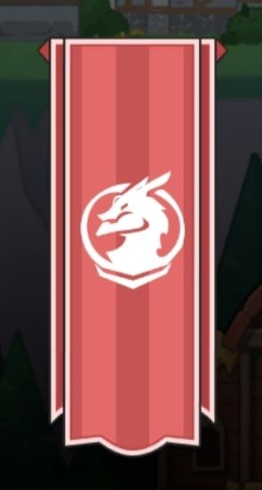

1
Choose Class Path
Pick the path that matches your current build route.

UnrealSword X Staff
Plan. Build. Share. Become Unreal.
Pick the path that matches your current build route.
Higher tiers include previous class tiers.
Click a slot, then click a skill. Or click a skill and it fills the first open matching slot.
Search, filter, inspect, and assign skills.